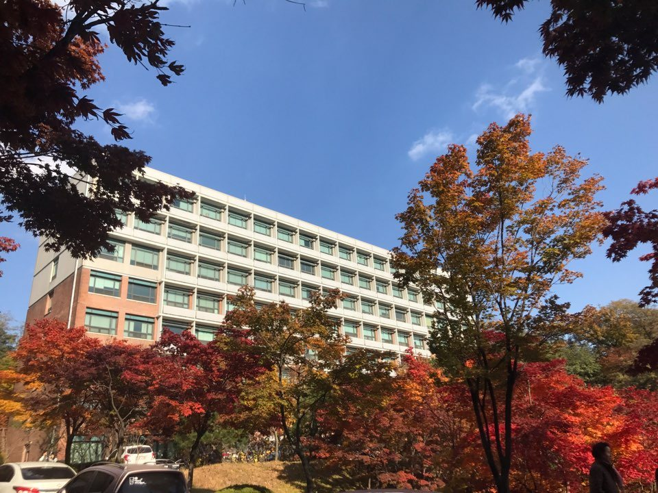

수능최저학력기준은 점수를 올리는 기준이 아니라 통과하면 끝나는 기준입니다. 그래서 정시 반영비율과는 공부 순서가 완전히 달라집니다. 아주대학교 학생부교과 고교추천전형의 인문·자연계열 기준은 국어·수학·영어·탐구 중 2개 영역 등급 합 5 이내입니다. 네 과목을 고르게 올릴 필요가 없다는 뜻입니다. 이 글은 그 기준을 그래서 어느 과목을 먼저로 바꿔 읽습니다.
| 전형·모집단위 | 수능최저 |
|---|---|
| 학생부교과 고교추천 — 인문·자연계열 | 2개 영역 등급 합 5 이내 |
| 학생부교과 고교추천 — 의학과 | 4개 영역 등급 합 6 이내 |
| 의학과 지역의사선발전형 | 4개 영역 등급 합 6 이내 |
| 학생부종합 ACE — 의학과·약학과 제외 | 수능최저 미적용 |
2027학년도에는 수능 전 영역에 응시해야 한다는 자격 요건이 없어졌습니다. 지원 문턱을 낮추는 변화입니다. 탐구를 몇 과목으로 세는지, 평균을 어떻게 처리하는지는 전형마다 다르게 안내되니 지망 전형의 칸을 요강에서 확인해야 합니다.
2개 영역 합 5는 1등급 하나와 4등급 하나로도, 2등급 둘에 1등급 하나를 섞지 않고 2등급과 3등급으로도 맞출 수 있습니다. 조합이 여럿이라는 점이 핵심입니다. 네 과목을 다 2등급으로 만드는 계획보다, 확실한 한 과목과 그다음 한 과목을 정해 끝까지 끌고 가는 계획이 훨씬 현실적입니다.
그래서 순서는 이렇게 잡습니다. ① 지금 가장 안정적인 과목 하나를 정합니다. ② 그 과목을 지키는 시간은 줄이지 않습니다. ③ 나머지 시간을 두 번째 과목 하나에 몰아 줍니다. 세 번째·네 번째 과목은 내신과 면접 준비에 쓰는 편이 합격에 더 가깝습니다. 교과전형은 결국 학교 성적으로 뽑는 전형이고, 수능은 통과 조건이기 때문입니다.
탐구는 범위가 정해져 있고 시험까지 남은 기간에 등급이 움직이는 폭이 큰 편입니다. 국어처럼 실력이 천천히 쌓이는 과목보다, 남은 기간이 짧을수록 탐구 쪽 손익이 분명합니다. 다만 탐구를 최저에 넣을 때 몇 과목을 어떻게 세는지가 전형마다 다르니, 계산을 시작하기 전에 그 규칙부터 확인해야 합니다.
영어는 성격이 다릅니다. 절대평가라 등급이 계단처럼 움직여서, 한 등급을 올리면 조합 전체가 바뀌는 과목입니다. 지금 2등급 언저리라면 영어를 두 번째 과목으로 두는 편이 효율적일 때가 많습니다.
의학과는 4개 영역을 모두 세어 합 6입니다. 평균 1.5등급이라는 뜻이라, 여기서는 "두 과목만"이라는 전략이 성립하지 않습니다. 한 과목이라도 무너지면 나머지 세 과목이 전부 1등급이어야 합니다. 의학과를 보는 학생에게 남은 기간의 원칙은 단순합니다. 가장 약한 과목부터 손봅니다. 잘하는 과목을 더 올려도 합에서 얻는 것이 없습니다.